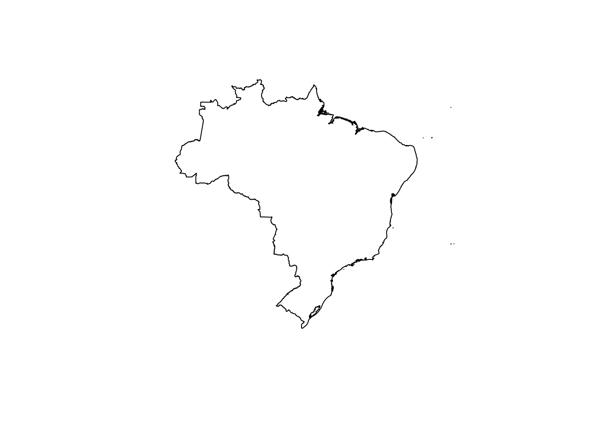
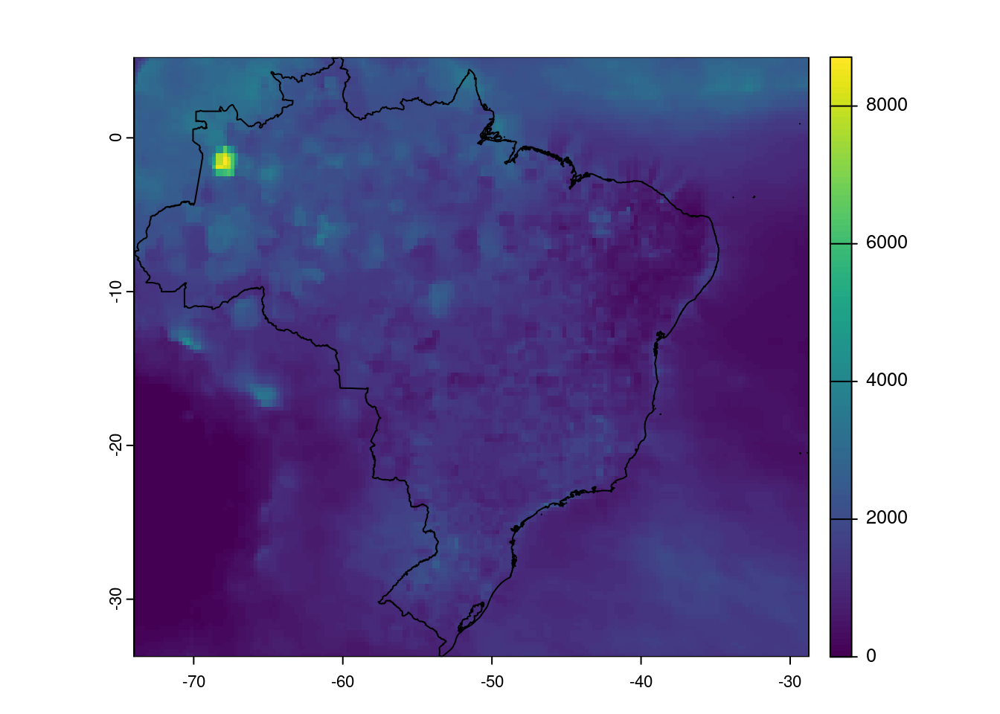
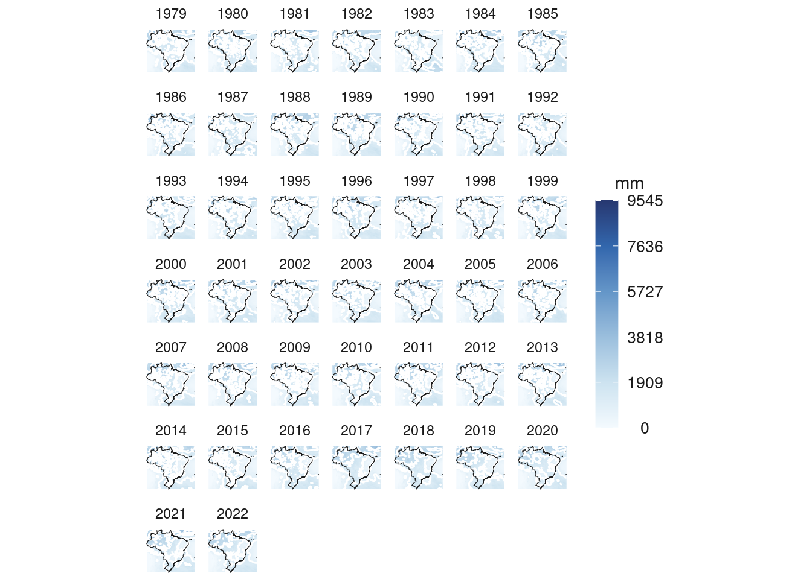
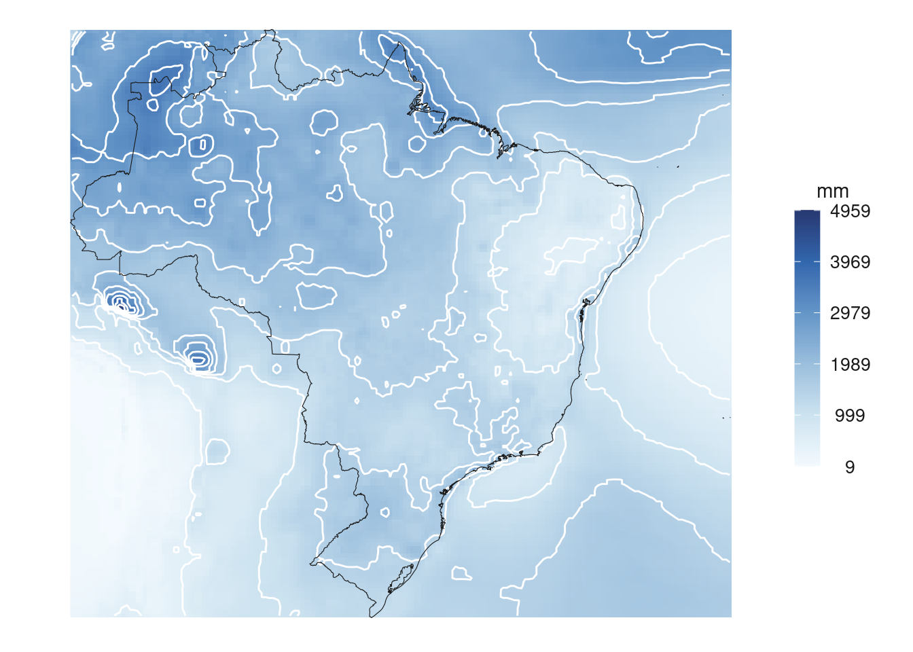

# Paquete para descargar, visualizar y analizar datos de precipitación
install.packages("pRecipe")
# Paquete para descargar datos de GISCO (Geographic Information System of the Commission)
install.packages("giscoR")
# Paquete para calcular intervalos de clasificación para datos numéricos
install.packages("classInt")12 Mapas de precipitación
12.1 Introducción
Este capítulo muestra como elaborar mapas de precipitación con base en datos de diversas fuentes. El contenido está basado en el tutorial de Milos Popovic How to Create Amazing Precipitation Maps with R in 2D and 3D.
Los datos de precipitación se descargan con el paquete pRecipe para un polígono (o polígonos) definido mediante el paquete giscoR.
12.2 Instalación y carga de paquetes
# Colección de paquetes de Tidyverse
library(tidyverse)
# Cálculo de intervalos de clasificación
library(classInt)
# Manejo de datos vectoriales
library(sf)
# Manejo de datos raster
library(terra)
# Datos de precipitación
library(pRecipe)
# Datos de GISCO
library(giscoR)12.3 Obtención del polígono del país
En el siguiente bloque se especifica el país (o los países) para el que se van a descargar datos de precipitación.
# Código ISO3 del país
pais <- "BRA"
# pais <- c("PAN", "CRI", "NIC")Se utiliza la función giscoR::gisco_get_countries() para obtener el polígono del país.
# Obtener polígono del país
poligono_pais <- giscoR::gisco_get_countries(
country = pais,
resolution = "1"
)
# Desplegar el polígono
plot(poligono_pais$geometry)
12.4 Obtención de datos de precipitación
Se utiliza la función pRecipe::download_data() para la descarga de los datos de precipitación.
# Descarga
pRecipe::download_data(
dataset = "mswep", # conjunto de datos
path = path.expand("~"), # ruta de descarga
domain = "raw", # dominio de la descarga
timestep = "yearly" # periodo
)
# Archivo descargado
list.files(path.expand("~"), pattern = "\\.nc$")[1] "mswep_tp_mm_global_197902_202301_025_yearly.nc"Se recortan los datos de precipitación con el polígono del país.
# Lectura y recorte de los datos de precipitación
# Debe leerse el archivo que se descargó anteriormente
precipitacion <-
terra::rast( # lectura
file.path(path.expand("~"), "mswep_tp_mm_global_197902_202301_025_yearly.nc")
) |>
terra::crop(# recorte
poligono_pais
)# Metadatos
precipitacionclass : SpatRaster
dimensions : 156, 181, 45 (nrow, ncol, nlyr)
resolution : 0.25, 0.25 (x, y)
extent : -74, -28.75, -33.75, 5.25 (xmin, xmax, ymin, ymax)
coord. ref. : lon/lat WGS 84
source(s) : memory
varname : precipitation
names : preci~ion_1, preci~ion_2, preci~ion_3, preci~ion_4, preci~ion_5, preci~ion_6, ...
min values : 0.000, 4.167708e-02, 0.4929991, 0.2152826, 0.1319321, 9.284902, ...
max values : 8710.541, 5.184138e+03, 9338.0312500, 6341.0307617, 4198.7851562, 6542.886719, ...
unit : mm month-1, mm month-1, mm month-1, mm month-1, mm month-1, mm month-1, ...
time (days) : 1979-01-01 to 2023-01-01 Se despliega un mapa básico de los datos de precipitación recortados.
terra::plot(precipitacion[[1]])
plot(poligono_pais$geometry, add=TRUE)
12.5 Transformación
Los datos raster de precipitación se transforman a una dataframe para que puedan ser visualizados mediante ggplot2.
# Cambiar nombres de las bandas
names(precipitacion) <- 1979:2023
print(precipitacion)class : SpatRaster
dimensions : 156, 181, 45 (nrow, ncol, nlyr)
resolution : 0.25, 0.25 (x, y)
extent : -74, -28.75, -33.75, 5.25 (xmin, xmax, ymin, ymax)
coord. ref. : lon/lat WGS 84
source(s) : memory
varname : precipitation
names : 1979, 1980, 1981, 1982, 1983, 1984, ...
min values : 0.000, 4.167708e-02, 0.4929991, 0.2152826, 0.1319321, 9.284902, ...
max values : 8710.541, 5.184138e+03, 9338.0312500, 6341.0307617, 4198.7851562, 6542.886719, ...
unit : mm month-1, mm month-1, mm month-1, mm month-1, mm month-1, mm month-1, ...
time (days) : 1979-01-01 to 2023-01-01 # Transformar el raster a un dataframe
# para graficarlo en ggplot2
precipitacion_df <-
precipitacion |>
as.data.frame(xy = TRUE) |>
tidyr::pivot_longer( # convertir de "formato largo" a "formato corto"
!c("x", "y"),
names_to = "year",
values_to = "precipitation"
) |>
dplyr::filter(year < 2023) # filtrado de datos
print(head(precipitacion_df))# A tibble: 6 × 4
x y year precipitation
<dbl> <dbl> <chr> <dbl>
1 -73.9 5.12 1979 1518.
2 -73.9 5.12 1980 1140.
3 -73.9 5.12 1981 2053.
4 -73.9 5.12 1982 1629.
5 -73.9 5.12 1983 1490.
6 -73.9 5.12 1984 1561.12.6 Visualización
Para visualizar los datos, primero se crea un estilo personalizado para ggplot2.
# Estilo
estilo_precipitacion <- function() {
theme_minimal() +
theme(
axis.line = element_blank(),
axis.title.x = element_blank(),
axis.title.y = element_blank(),
axis.text.x = element_blank(),
axis.text.y = element_blank(),
legend.position = "right",
legend.title = element_text(size = 11, color = "grey10"),
legend.text = element_text(size = 10, color = "grey10"),
panel.grid.major = element_line(color = NA),
panel.grid.minor = element_line(color = NA),
plot.background = element_rect(fill = NA, color = NA),
legend.background = element_rect(fill = "white", color = NA),
panel.border = element_rect(fill = NA, color = NA),
plot.margin = unit(c(
t = 0,
r = 0,
b = 0,
l = 0
), "lines")
)
}
# Intervalos para las clases del mapa
intervalos <- classInt::classIntervals(
precipitacion_df$precipitation,
n = 5,
style = "equal"
)$brks
# Colores para el mapa
colores <- hcl.colors(
n = length(intervalos),
palette = "Blues",
rev = TRUE
)Se genera un panel con un mapa por año.
# Generar un panel de mapas
panel_mapas <- ggplot(data = precipitacion_df) +
geom_raster(aes(x = x, y = y, fill = precipitation)) +
geom_contour(aes(x = x, y = y, z = precipitation), color = "white") +
geom_sf(
data = poligono_pais,
fill = "transparent",
color = "grey10",
size = .5
) +
scale_fill_gradientn(
name = "mm",
colors = colores,
breaks = intervalos,
labels = round(intervalos, 0),
limits = c(
min(precipitacion_df$precipitation),
max(precipitacion_df$precipitation)
)
) +
facet_wrap( ~ year) +
guides(
fill = guide_colourbar(
direction = "vertical",
barheight = unit(50, "mm"),
barwidth = unit(5, "mm"),
title.position = "top",
label.position = "right",
title.hjust = .5,
label.hjust = .5,
ncol = 1,
byrow = FALSE
)
) +
estilo_precipitacion()
# Despliegue
panel_mapas
Seguidamente, se crea un mapa con el promedio de clasificación para todos los años.
# Cálculo del promedio de precipitación
precipitacion_promedio_df <-
precipitacion_df |>
dplyr::group_by(
x, y, .drop = FALSE
) |>
dplyr::summarise(
promedio = mean(precipitation)
)
print(head(precipitacion_promedio_df))# A tibble: 6 × 3
# Groups: x [1]
x y promedio
<dbl> <dbl> <dbl>
1 -73.9 -33.6 247.
2 -73.9 -33.4 229.
3 -73.9 -33.1 209.
4 -73.9 -32.9 192.
5 -73.9 -32.6 176.
6 -73.9 -32.4 162.# Intervalos para las clases del mapa
intervalos <-
classInt::classIntervals(
precipitacion_promedio_df$promedio,
n = 5,
style = "equal"
)$brks
# Colores para el mapa
colores <- hcl.colors(
n = length(intervalos),
palette = "Blues",
rev = TRUE
)
# Mapa
mapa_promedio <-
ggplot(data = precipitacion_promedio_df) +
geom_raster(aes(x = x, y = y, fill = promedio)) +
geom_contour(aes(x = x, y = y, z = promedio), color = "white") +
geom_sf(
data = poligono_pais,
fill = "transparent",
color = "grey10",
size = .5
) +
scale_fill_gradientn(
name = "mm",
colors = colores,
breaks = intervalos,
labels = round(intervalos, 0),
limits = c(
min(precipitacion_promedio_df$promedio),
max(precipitacion_promedio_df$promedio)
)
) +
guides(
fill = guide_colourbar(
direction = "vertical",
barheight = unit(50, "mm"),
barwidth = unit(5, "mm"),
title.position = "top",
label.position = "right",
title.hjust = .5,
label.hjust = .5,
ncol = 1,
byrow = FALSE
)
) +
estilo_precipitacion()
# Despliegue
mapa_promedio
12.7 Ejercicios
- Elabore otros mapas con diferentes polígonos delimitadores y diferentes conjuntos de datos de precipitación.
- Elabore mapas interactivos con el paquete tmap o el paquete leaflet.
12.8 Recursos de interés
How to Create Amazing Precipitation Maps with R in 2D and 3D